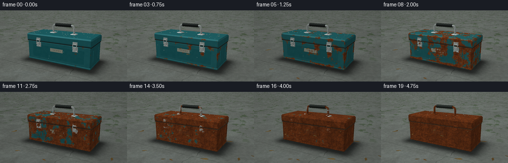
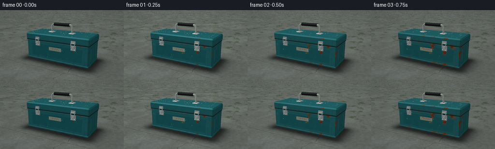
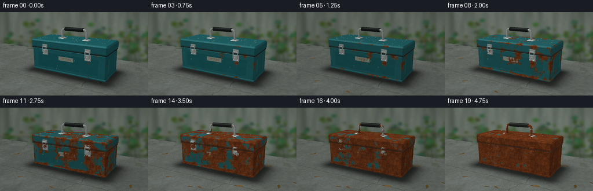
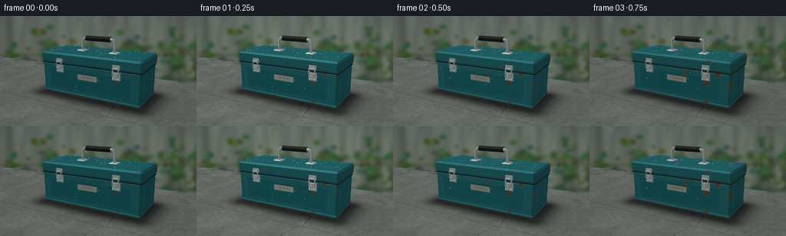

CODING AGENTS AS PIXEL WORLD MODELS
traex/GPT-6.1-Sol · material_0049
点击播放 · 原生 RGB 像素
逐轮保存的候选
回放视频、检查图与代码变化。
每份候选均可单独播放。实际图片检查记录在下方工具轨迹中。
候选 01播放与检查图
点击播放 · 原生 RGB 像素


展开代码变化
--- 上一保存版本
+++ 本次保存版本
@@ -0,0 +1,447 @@
+"""Procedural, fixed-camera RGB timelapse of a weathering steel toolbox.
+No inputs other than the text/task specification; numpy/PIL geometry and shading.
+"""
+from pathlib import Path
+import json
+import numpy as np
+from PIL import Image, ImageDraw, ImageFilter
+import artifact_io
+
+ROOT = Path(__file__).resolve().parent
+SPEC = json.loads((ROOT / 'task_spec.json').read_text())
+S = 3
+W, H = SPEC['width'] * S, SPEC['height'] * S
+rng = np.random.default_rng(449)
+CAM = np.array([3.65, 2.83, -6.65], dtype=np.float32)
+TARGET = np.array([0, .78, 0], dtype=np.float32)
+FWD = TARGET - CAM; FWD /= np.linalg.norm(FWD)
+RIGHT = np.cross([0, 1, 0], FWD); RIGHT /= np.linalg.norm(RIGHT)
+UP = np.cross(FWD, RIGHT)
+FOCAL = 313 * S
+Y, X = np.mgrid[:H, :W].astype(np.float32)
+RAYS = FWD + ((X-W/2+.5)/FOCAL)[..., None]*RIGHT - ((Y-H/2+.5)/FOCAL)[..., None]*UP
+
+def smooth(a, b, x):
+ f = np.clip((x-a)/(b-a), 0, 1)
+ return f*f*(3-2*f)
+
+def hashnoise(x, y, z=0., seed=0):
+ v = np.sin(x*127.1 + y*311.7 + z*74.7 + seed*19.19)*43758.5453123
+ return (v-np.floor(v)).astype(np.float32)
+
+def noise(x, y, z=0., seed=0):
+ ix, iy, iz = np.floor(x), np.floor(y), np.floor(z)
+ u, v, w = x-ix, y-iy, z-iz
+ u=u*u*(3-2*u); v=v*v*(3-2*v); w=w*w*(3-2*w)
+ a = hashnoise(ix,iy,iz,seed)*(1-u)+hashnoise(ix+1,iy,iz,seed)*u
+ b = hashnoise(ix,iy+1,iz,seed)*(1-u)+hashnoise(ix+1,iy+1,iz,seed)*u
+ c = hashnoise(ix,iy,iz+1,seed)*(1-u)+hashnoise(ix+1,iy,iz+1,seed)*u
+ d = hashnoise(ix,iy+1,iz+1,seed)*(1-u)+hashnoise(ix+1,iy+1,iz+1,seed)*u
+ return (a*(1-v)+b*v)*(1-w)+(c*(1-v)+d*v)*w
+
+def fbm(x,y,z=0.,seed=0):
+ return .51*noise(x,y,z,seed)+.27*noise(x*2.07,y*2.07,z*2.07,seed+1)+.14*noise(x*4.21,y*4.21,z*4.21,seed+2)+.08*noise(x*8.37,y*8.37,z*8.37,seed+3)
+
+# Background: long weathered fence and an out-of-focus damp, overgrown garden.
+def make_background():
+ rr = np.random.default_rng(132)
+ yy, xx = np.mgrid[:H,:W]
+ bg=np.empty((H,W,3),np.float32)
+ for k, (a,b) in enumerate([(104,52),(125,77),(128,74)]):
+ bg[...,k]=a+(b-a)*np.minimum(yy/(H*.8),1)
+ fence_start=0; fence_bottom=int(H*.68)
+ for j in range(-1,13):
+ x0=int((j*25-8)*S); x1=x0+int(24*S)
+ left=max(0,x0);right=min(W,x1)
+ if right<=left:continue
+ widths=right-left
+ bx=np.arange(left,right)[None,:]/S
+ by=np.arange(fence_bottom)[:,None]/S
+ grain=fbm(bx*1.4,by*.038,seed=10+j)*15+noise(bx*.22,by*.036,seed=50)*17
+ c=np.array([80,89,79])+rr.uniform(-8,8)
+ vertical=(bx-x0/S)/(max(1,(x1-x0)/S))
+ light=5*np.sin(vertical*np.pi)-8*(vertical>.90)
+ bg[:fence_bottom,left:right]=c+grain[...,None]+light[...,None]
+ img=Image.fromarray(np.uint8(np.clip(bg,0,255)))
+ d=ImageDraw.Draw(img)
+ d.rectangle((0,int(47*S),W,int(52*S)),fill=(84,91,80))
+ d.line((0,47*S,W,47*S),fill=(111,112,92),width=2*S)
+ d.rectangle((0,int(81*S),W,int(86*S)),fill=(71,82,64))
+ # Distant intertwined branches and dense clusters of soft leaves.
+ for _ in range(38):
+ cx=float(rr.uniform(-20,280))*S; cy=float(rr.uniform(30,112))*S
+ root=(cx+rr.uniform(-12,12)*S,118*S)
+ d.line([root,(cx,cy)],fill=(51,66,45),width=int(rr.uniform(1,2.3)*S))
+ for j in range(int(rr.integers(7,16))):
+ lx=cx+rr.normal(0,10)*S; ly=cy+rr.normal(0,8)*S
+ rx=rr.uniform(2,6)*S; ry=rr.uniform(1.4,4)*S
+ col=(int(rr.uniform(41,78)),int(rr.uniform(67,102)),int(rr.uniform(33,68)))
+ d.ellipse((lx-rx,ly-ry,lx+rx,ly+ry),fill=col)
+ img=img.filter(ImageFilter.GaussianBlur(2.0*S))
+ # A restrained bokeh highlight field.
+ spots=Image.new('RGBA',(W,H))
+ dr=ImageDraw.Draw(spots)
+ for _ in range(35):
+ cx,cy=rr.uniform(0,W),rr.uniform(0,H*.67); rad=rr.uniform(2,6)*S
+ dr.ellipse((cx-rad,cy-rad,cx+rad,cy+rad),fill=(160,184,140,int(rr.uniform(5,18))))
+ img=Image.alpha_composite(img.convert('RGBA'),spots.filter(ImageFilter.GaussianBlur(2*S))).convert('RGB')
+ return np.asarray(img,dtype=np.float32)
+
+# Camera-space, perspective-correct rasterizer. Mat IDs: ground, enamel body,
+# enamel lid, steel, handle rubber, rear hinges, inner seams, old paint badge.
+DEPTH=np.full((H,W),np.inf,np.float32)
+POS=np.zeros((H,W,3),np.float32)
+NORMAL=np.zeros((H,W,3),np.float32)
+MAT=np.full((H,W),-1,np.int16)
+
+def project(vertices):
+ q=np.asarray(vertices,np.float32)-CAM
+ z=q@FWD
+ return np.stack([W/2+FOCAL*(q@RIGHT)/z,H/2-FOCAL*(q@UP)/z],axis=-1),z
+
+def triangle(a,b,c,material):
+ v=np.array([a,b,c],np.float32)
+ normal=np.cross(v[1]-v[0],v[2]-v[0]); ln=np.linalg.norm(normal)
+ if ln<1e-8:return
+ normal/=ln
+ if normal@(CAM-v.mean(axis=0))<0:normal=-normal
+ p,z=project(v)
+ x0=max(0,int(np.floor(p[:,0].min()))); x1=min(W,int(np.ceil(p[:,0].max()))+1)
+ y0=max(0,int(np.floor(p[:,1].min()))); y1=min(H,int(np.ceil(p[:,1].max()))+1)
+ if x0>=x1 or y0>=y1:return
+ xx=X[y0:y1,x0:x1]+.5; yy=Y[y0:y1,x0:x1]+.5
+ den=(p[1,1]-p[2,1])*(p[0,0]-p[2,0])+(p[2,0]-p[1,0])*(p[0,1]-p[2,1])
+ if abs(den)<1e-7:return
+ u=((p[1,1]-p[2,1])*(xx-p[2,0])+(p[2,0]-p[1,0])*(yy-p[2,1]))/den
+ vv=((p[2,1]-p[0,1])*(xx-p[2,0])+(p[0,0]-p[2,0])*(yy-p[2,1]))/den
+ w=1-u-vv
+ iz=u/z[0]+vv/z[1]+w/z[2]
+ depth=1/np.maximum(iz,1e-8)
+ mask=(u>=-1e-5)&(vv>=-1e-5)&(w>=-1e-5)&(depth<DEPTH[y0:y1,x0:x1])
+ if not mask.any():return
+ co=np.stack([u/z[0],vv/z[1],w/z[2]],axis=-1)*depth[...,None]
+ world=co@v
+ DEPTH[y0:y1,x0:x1][mask]=depth[mask]
+ POS[y0:y1,x0:x1][mask]=world[mask]
+ NORMAL[y0:y1,x0:x1][mask]=normal
+ MAT[y0:y1,x0:x1][mask]=material
+
+def poly(points,material):
+ for i in range(1,len(points)-1):triangle(points[0],points[i],points[i+1],material)
+
+def octagon(x,z,b,y):
+ return np.array([[-x+b,y,-z],[x-b,y,-z],[x,y,-z+b],[x,y,z-b],
+ [x-b,y,z],[-x+b,y,z],[-x,y,z-b],[-x,y,-z+b]],np.float32)
+
+def bevel_box(cx,cz,hx,hz,y0,y1,b,material):
+ rings=[octagon(hx-b,hz-b,max(.004,b*.33),y0),octagon(hx,hz,b,y0+b),
+ octagon(hx,hz,b,y1-b),octagon(hx-b,hz-b,max(.004,b*.33),y1)]
+ for r in rings:r[:,0]+=cx;r[:,2]+=cz
+ poly(rings[0][::-1],material);poly(rings[-1],material)
+ for r0,r1 in zip(rings[:-1],rings[1:]):
+ for i in range(8):j=(i+1)%8;poly([r0[i],r0[j],r1[j],r1[i]],material)
+
+def cuboid(a,b,material):
+ x0,y0,z0=a;x1,y1,z1=b
+ poly([[x0,y0,z0],[x1,y0,z0],[x1,y1,z0],[x0,y1,z0]],material)
+ poly([[x0,y0,z1],[x0,y1,z1],[x1,y1,z1],[x1,y0,z1]],material)
+ poly([[x0,y0,z0],[x0,y1,z0],[x0,y1,z1],[x0,y0,z1]],material)
+ poly([[x1,y0,z0],[x1,y0,z1],[x1,y1,z1],[x1,y1,z0]],material)
+ poly([[x0,y1,z0],[x1,y1,z0],[x1,y1,z1],[x0,y1,z1]],material)
+ poly([[x0,y0,z0],[x0,y0,z1],[x1,y0,z1],[x1,y0,z0]],material)
+
+def cylinder(a,b,r,material,n=16):
+ a=np.array(a,np.float32);b=np.array(b,np.float32);axis=b-a;axis/=np.linalg.norm(axis)
+ perp=np.cross(axis,[0,1,0] if abs(axis[1])<.9 else [1,0,0]);perp/=np.linalg.norm(perp)
+ other=np.cross(axis,perp)
+ ring=np.array([r*(np.cos(v)*perp+np.sin(v)*other) for v in np.linspace(0,2*np.pi,n,endpoint=False)])
+ for j in range(n):k=(j+1)%n;poly([a+ring[j],a+ring[k],b+ring[k],b+ring[j]],material)
+ poly(a+ring,material);poly(b+ring,material)
+
+def sphere(center,r,material):
+ center=np.array(center,np.float32)
+ pp,z=project([center]);rad=FOCAL*r/z[0]*1.2
+ x0=max(0,int(pp[0,0]-rad-2));x1=min(W,int(pp[0,0]+rad+3))
+ y0=max(0,int(pp[0,1]-rad-2));y1=min(H,int(pp[0,1]+rad+3))
+ if x1<=x0 or y1<=y0:return
+ rays=RAYS[y0:y1,x0:x1];oc=CAM-center
+ aa=(rays*rays).sum(-1);bb=(rays*oc).sum(-1);cc=oc@oc-r*r
+ discriminant=bb*bb-aa*cc
+ t=(-bb-np.sqrt(np.maximum(discriminant,0)))/aa
+ mask=(discriminant>=0)&(t>0)&(t<DEPTH[y0:y1,x0:x1])
+ points=CAM+rays*t[...,None]
+ DEPTH[y0:y1,x0:x1][mask]=t[mask]
+ POS[y0:y1,x0:x1][mask]=points[mask]
+ NORMAL[y0:y1,x0:x1][mask]=(points[mask]-center)/r
+ MAT[y0:y1,x0:x1][mask]=material
+
+# Geometry, stationary for all twenty frames.
+tground=-CAM[1]/RAYS[...,1]
+ground=(RAYS[...,1]<-.01)&(tground>0)
+DEPTH[ground]=tground[ground];POS[ground]=CAM+RAYS[ground]*tground[ground,None]
+NORMAL[ground]=[0,1,0];MAT[ground]=0
+bevel_box(0,0,1.69,.70,.085,1.065,.035,1)
+# Thin dark seam below an overhanging pressed-steel lid.
+bevel_box(0,0,1.71,.72,1.045,1.083,.012,6)
+bevel_box(0,0,1.73,.737,1.073,1.415,.053,2)
+# Folded bottom rim and small feet.
+bevel_box(0,0,1.7,.711,.074,.15,.018,1)
+for x in [-1.25,1.25]:
+ for z in [-.43,.43]:bevel_box(x,z,.22,.13,.005,.105,.018,6)
+# Carrying handle: two mounting shoes, rounded metal uprights and textured grip.
+for x in [-.58,.58]:
+ bevel_box(x,0,.145,.15,1.409,1.448,.018,3)
+ cylinder([x,1.445,0],[x,1.715,0],.045,3)
+ for z in [-.093,.093]:sphere([x,1.45,z],.025,3)
+# Rounded upper ends of U handle with a straight black rubber sleeve.
+for sign in [-1,1]:
+ points=[]
+ for ang in np.linspace(0,np.pi/2,9):
+ points.append([sign*(.46+.12*np.cos(ang)),1.715+.12*np.sin(ang),0])
+ for a,b in zip(points[:-1],points[1:]):cylinder(a,b,.045,3,12)
+cylinder([-.46,1.835,0],[.46,1.835,0],.055,3)
+cylinder([-.435,1.835,0],[.435,1.835,0],.082,4,24)
+# Two silver over-center draw catches, accurately crossing lid seam.
+for x in [-.98,.98]:
+ cuboid([x-.118,.797,-.750],[x+.118,1.022,-.709],3)
+ cuboid([x-.111,1.116,-.772],[x+.111,1.245,-.731],3)
+ cylinder([x-.099,.839,-.771],[x+.099,.839,-.771],.032,3)
+ # bail loop hugging the rim
+ for sx in [x-.089,x+.089]:
+ cylinder([sx,.91,-.795],[sx,1.16,-.795],.019,3,10)
+ cylinder([x-.089,1.158,-.795],[x+.089,1.158,-.795],.019,3,10)
+ cuboid([x-.064,.848,-.812],[x+.064,1.023,-.776],3)
+ sphere([x,.946,-.832],.025,3)
+ for sx in [x-.073,x+.073]:
+ sphere([sx,.823,-.773],.018,3);sphere([sx,1.212,-.782],.016,3)
+# Small nearly illegible stamped maker's plate between catches.
+cuboid([-.34,.633,-.714],[.34,.799,-.703],7)
+for x in [-.30,.30]:sphere([x,.715,-.726],.012,3)
+# Visible side: reinforcing panel and rear hinges.
+for z in [-.38,.38]:
+ cuboid([1.690,.32,z-.017],[1.708,.855,z+.017],1)
+for x in [-1.0,1.0]:
+ cuboid([x-.13,.94,.706],[x+.13,1.20,.758],5)
+ cylinder([x-.145,1.075,.754],[x+.145,1.075,.754],.047,5)
+
+# Cache invariant surface fields.
+PX,PY,PZ=POS[...,0],POS[...,1],POS[...,2]
+N1=fbm(PX*3.0,PY*3.0,PZ*3.0,4)
+N2=fbm(PX*10,PY*10,PZ*10,18)
+N3=noise(PX*47,PY*47,PZ*47,seed=3)
+N4=hashnoise(np.floor(PX*185),np.floor(PY*185),np.floor(PZ*185),seed=3)
+N5=fbm(PX*24,PY*24,PZ*24,41)
+# Different initiation sites at seams, scratches and rivets, then connected spots.
+edge=np.maximum.reduce([np.exp(-np.abs(PY-.14)*26),np.exp(-np.abs(PY-1.07)*23),
+ np.exp(-np.abs(np.abs(PX)-1.67)*29),np.exp(-np.abs(PY-1.37)*40)])
+init=(.67*N1+.23*N2+.10*N3)
+init-=.17*edge
+# Gravity-aligned corrosion runs: fixed channels under catches, top edge, corners.
+verticalnoise=fbm(PX*17,np.zeros_like(PY)+.37,PZ*17,62)
+drips=smooth(.57,.76,verticalnoise)*smooth(.18,.95,PY)*(1-smooth(1.1,1.35,PY))
+init-=.105*drips
+for bx in [-.98,.98]:
+ init-=.20*np.exp(-((PX-bx)/.14)**2-((PY-.83)/.27)**2-((PZ+.73)/.12)**2)
+init=np.clip(init,.08,.92)
+view=CAM-POS;view/=np.maximum(np.linalg.norm(view,axis=-1,keepdims=True),1e-6)
+base_light=np.array([-.45,.83,-.33],np.float32);base_light/=np.linalg.norm(base_light)
+ndotl=np.maximum((NORMAL*base_light).sum(-1),0)
+# Concrete floor fields and deep contact shadow.
+G1=fbm(PX*.75,PZ*.75,seed=51)
+G2=fbm(PX*11,PZ*11,seed=36)
+G3=hashnoise(np.floor(PX*140),np.floor(PZ*140),seed=47)
+outerx=np.maximum(np.abs(PX)-1.67,0);outerz=np.maximum(np.abs(PZ)-.68,0)
+shadow=np.exp(-((outerx/.42)**2+(outerz/.37)**2))*0.62
+shadow+=.13*np.exp(-((PX-.33)/2.15)**2-((PZ-.3)/1.0)**2)
+shadow=np.clip(shadow,0,.86)
+# Slab joint with two hairline cracks, proper perspective in ground coordinates.
+joint=np.exp(-((PZ+1.45+.025*np.sin(PX*3))/.012)**2)
+crackpath=.90+.1*np.sin(PZ*4)+.035*np.sin(PZ*13)
+crack=np.exp(-((PX-crackpath)/.008)**2)*smooth(.6,1.0,-PZ)
+mosspat=fbm(PX*2,PZ*2,seed=71)
+moss=smooth(.60,.74,mosspat)*smooth(.65,2.7,PZ)
+BG=make_background()
+
+# Details on ground are world-projected, so leaves do not slide between years.
+leaves=[]
+rr=np.random.default_rng(235)
+for j in range(22):
+ px=rr.uniform(-3.9,3.9);pz=rr.uniform(-2.6,2.4)
+ if abs(px)<1.75 and abs(pz)<.80:continue
+ leaves.append((px,pz,rr.uniform(.085,.17),rr.uniform(0,2*np.pi),rr.uniform(0,.72),rr.integers(0,3)))
+
+def ground_leaves(img,t):
+ d=ImageDraw.Draw(img)
+ for lx,lz,r,angle,start,var in leaves:
+ if t<start:continue
+ # angular brown curled leaves, not perfect ovals.
+ verts=[]
+ for ox,oz in [(-1,0),(-.4,-.35),(.22,-.25),(1.1,0),(.32,.35),(-.45,.33)]:
+ verts.append([lx+r*(ox*np.cos(angle)-oz*np.sin(angle)),.007,lz+r*(ox*np.sin(angle)+oz*np.cos(angle))])
+ pp,_=project(verts)
+ if pp[:,1].min()<0 or pp[:,1].max()>H+10:continue
+ col=[(111,76,39),(93,71,40),(121,94,49)][var]
+ d.polygon([tuple(p) for p in pp],fill=col)
+ line,_=project([[lx-r*np.cos(angle),.009,lz-r*np.sin(angle)],[lx+r*np.cos(angle),.009,lz+r*np.sin(angle)]])
+ d.line([tuple(p) for p in line],fill=(69,56,33),width=1)
+ return img
+
+# Highlight beads generated on the exposed lid/front surfaces, not screen-fixed.
+beads=[]
+rr=np.random.default_rng(776)
+for _ in range(85):
+ if rr.random()<.78:
+ p=[rr.uniform(-1.58,1.58),1.416,rr.uniform(-.62,.62)]
+ else:p=[rr.uniform(-1.55,1.55),rr.uniform(.23,1.01),-.707]
+ pp,z=project([p]);beads.append((pp[0],rr.uniform(.35,.9)*S,p))
+
+def render(i):
+ t=i/(SPEC['frames']-1)
+ # Passing damp, gray days in the time lapse, with a stable camera and subject.
+ weather=.55+.28*np.sin(i*1.77+.4)+.15*np.sin(i*.61)
+ wet=np.clip(weather,0,1)
+ threshold=.17+.565*(t**.84)
+ rust=smooth(init-.035,init+.032,threshold)
+ age=np.clip((threshold-init+.04)*2.9,0,1)
+ front=MAT==1; lid=MAT==2; enamel=front|lid
+ out=BG.copy()
+ # Cloud light changes are mild and smooth enough not to obscure weathering.
+ illum=.96+.047*np.sin(i*1.08)+.021*np.sin(i*2.14)
+ out*=illum
+ # Wet concrete, with scattered gritty aggregate and small reflective damp spots.
+ damp=smooth(.30,.62,G1)*(.35+.45*wet)
+ gc=np.stack([113+21*(G1-.5),119+19*(G1-.5),113+18*(G1-.5)],axis=-1)
+ gc+=(G2-.5)[...,None]*21+(G3-.5)[...,None]*14
+ gc*=1-damp[...,None]*.20
+ gc*=1-shadow[...,None]
+ gc-=joint[...,None]*26+crack[...,None]*39
+ gc=gc*(1-moss[...,None]*.50)+np.array([49,72,38])*moss[...,None]*.50
+ flecks=smooth(.91,.98,G3)*(1-shadow)
+ gc+=flecks[...,None]*13
+ puddle=smooth(.54,.70,fbm(PX*.9+8,PZ*.9,seed=38))*(1-smooth(-.4,.9,PZ))
+ gc=gc*(1-puddle[...,None]*.16)+np.array([138,151,150])*puddle[...,None]*.16
+ # Short-lived rain ripples on the wet ground.
+ if wet>.57:
+ ripple=np.zeros((H,W),np.float32)
+ for k in range(5):
+ cx=-2.8+k*1.31;cz=-1.7+.16*np.sin(k*3)
+ dist=np.hypot((PX-cx),PZ-cz)
+ rradius=.06+.28*((i*.173+k*.31)%1)
+ ripple+=np.exp(-((dist-rradius)/.009)**2)*.09
+ gc+=ripple[...,None]*np.array([70,76,79])
+ out[MAT==0]=(gc*illum)[MAT==0]
+ # Powder enamel: muted petrol blue; paint chalks and loses its gloss over years.
+ paint=np.array([33,106,111],np.float32)
+ paint=paint*(1-.21*t)+np.array([111,137,132],np.float32)*(.21*t)
+ shade=.58+.43*ndotl
+ enamelrgb=paint[None,None,:]*shade[...,None]
+ enamelrgb=enamelrgb+(N2-.5)[...,None]*6+(N4-.5)[...,None]*4
+ # Pressed, inset front panel gives the otherwise flat steel wall a realistic form.
+ panelx=np.maximum(np.abs(PX)-1.37,0);panely=np.maximum(np.abs(PY-.56)-.285,0)
+ border=np.exp(-((np.maximum(panelx,panely)-.014)/.012)**2)
+ interior=(np.abs(PX)<1.38)&(PY>.27)&(PY<.87)&(NORMAL[...,2]<-.8)
+ enamelrgb-=interior[...,None]*4
+ enamelrgb-=border[...,None]*(NORMAL[...,2]<-.8)[...,None]*4
+ # Steel wool scrapes and tiny chips remain anchored as rust grows around them.
+ scratch=(smooth(.976,.998,noise(PX*4,PY*110,PZ*4,seed=50))*(1-N2))
+ enamelrgb+=scratch[...,None]*9
+ # Multi-scale iron oxide with orange rims, old dark flakes and fine pitting.
+ rustmix=np.clip(.46*N2+.25*N3+.17*N4+.12*N5,0,1)
+ rusty=np.empty((H,W,3),np.float32)
+ for k,(lo,hi) in enumerate([(77,175),(39,87),(23,40)]):rusty[...,k]=lo+(hi-lo)*rustmix
+ rusty+=np.array([21,9,0])*smooth(.40,.67,N5)[...,None]
+ rusty*=1-.23*age[...,None]
+ pits=smooth(.80,.96,N4)*smooth(.54,.77,N2)
+ rusty*=1-pits[...,None]*(.38+.14*t)
+ # Dark plate-like edges and raised, pale oxide grains.
+ flakes=smooth(.70,.87,N3)*smooth(.53,.68,N2)
+ rusty-=flakes[...,None]*np.array([24,16,7])*t
+ rusty+=smooth(.85,.97,N4)[...,None]*np.array([25,13,5])
+ rusty*=shade[...,None]
+ # Bright fresh oxidation rims bordering the surviving chips of paint.
+ boundary=np.exp(-((init-threshold)/.022)**2)
+ rusty+=boundary[...,None]*np.array([24,11,2])
+ surf=enamelrgb*(1-rust[...,None])+rusty*rust[...,None]
+ # Thin undercut paint-flake edges at the advancing irregular corrosion front.
+ chipedge=np.exp(-((init-threshold-.027)/.012)**2)*smooth(.50,.75,N3)
+ surf-=chipedge[...,None]*np.array([25,25,23])*smooth(.15,.45,t)
+ # Damp surface: broad sky reflections over paint, lower response over porous rust.
+ halfv=view+base_light;halfv/=np.maximum(np.linalg.norm(halfv,axis=-1,keepdims=True),1e-6)
+ spec=np.maximum((NORMAL*halfv).sum(-1),0)**28
+ glint=(.18+.22*wet)*(1-rust*.92)*(1-t*.55)
+ surf+=spec[...,None]*glint[...,None]*np.array([79,94,99])
+ surf*=1-wet*.075
+ # Vertical brown bleed is translucent outside fully developed rust patches.
+ surf=surf*(1-(drips*.07*t)[...,None])+np.array([99,52,24])*(drips*.07*t)[...,None]
+ out[enamel]=(surf*illum)[enamel]
+ # Metal closures and handle brackets rust from edges and hinge joints.
+ hardware=(MAT==3)|(MAT==5)
+ hrust=smooth(init-.028,init+.04,.12+.54*t)
+ metallic=np.array([168,177,173])*shade[...,None]
+ metallic+=(N3-.5)[...,None]*14
+ metallic+=spec[...,None]*np.array([74,80,85])
+ metallic=metallic*(1-hrust[...,None])+rusty*hrust[...,None]
+ out[hardware]=(metallic*illum)[hardware]
+ rubber=MAT==4
+ rib=(.5+.5*np.cos(PX*170))**5
+ rubbercolor=np.array([29,33,32])*shade[...,None]+(N3-.5)[...,None]*4
+ rubbercolor-=rib[...,None]*3
+ rubbercolor+=spec[...,None]*np.array([26,29,29])
+ rubbercolor+=t*np.array([6,6,4])
+ out[rubber]=(rubbercolor*illum)[rubber]
+ seams=MAT==6
+ seamcolor=np.array([27,40,39])*shade[...,None]
+ seamcolor=seamcolor*(1-.48*t)+rusty*.48*t
+ out[seams]=(seamcolor*illum)[seams]
+ badge=MAT==7
+ badgecolor=np.array([151,155,139])*shade[...,None]
+ # Subtle worn embossed lettering-like strokes on the little maker's plaque.
+ localx=(PX+.25)*34
+ marks=(np.mod(localx,1)<.15)&(PY>.683)&(PY<.747)&(np.abs(PX)<.24)
+ marks|=(PY>.743)&(PY<.750)&(np.abs(PX)<.23)
+ badgecolor-=marks[...,None]*38
+ badgecolor=badgecolor*(1-hrust[...,None]*.95)+rusty*hrust[...,None]*.95
+ out[badge]=(badgecolor*illum)[badge]
+ # Cool photographic toning, vignetting, very light fixed sensor grain.
+ out=np.clip(out,0,255)
+ im=Image.fromarray(np.uint8(out))
+ im=ground_leaves(im,t)
+ # Dew beads reflect a cool sky; they diminish as porous oxide takes over.
+ d=ImageDraw.Draw(im)
+ if wet>.40:
+ for j,(pp,rad,p) in enumerate(beads):
+ if ((j*17+i*3)%19)>int(wet*15):continue
+ if t>.7 and j%3:continue
+ px,py=pp
+ # Do not draw through the raised carrying handle.
+ ix=int(np.clip(px,0,W-1));iy=int(np.clip(py,0,H-1))
+ if MAT[iy,ix] not in [1,2]:continue
+ alpha=.7 if t<.3 else .5
+ d.ellipse((px-rad,py-rad*.48,px+rad,py+rad*.48),fill=(65+int(20*t),93-int(22*t),88-int(26*t)))
+ d.arc((px-rad,py-rad*.5,px+rad,py+rad*.5),195,300,fill=(149,175,175),width=1)
+ # Restrained rain streaks appear on a few compressed wet-weather days.
+ if wet>.74:
+ rr=np.random.default_rng(92+i)
+ layer=Image.new('RGBA',(W,H));rd=ImageDraw.Draw(layer)
+ for j in range(48):
+ sx=rr.uniform(0,W);sy=rr.uniform(0,H);length=rr.uniform(3,9)*S
+ rd.line((sx,sy,sx-length*.19,sy+length),fill=(166,183,183,int(rr.uniform(14,35))),width=1)
+ im=Image.alpha_composite(im.convert('RGBA'),layer).convert('RGB')
+ arr=np.asarray(im,dtype=np.float32)
+ vignette=1-.095*(((X-W*.50)/(W*.70))**2+((Y-H*.52)/(H*.82))**2)
+ arr*=vignette[...,None]
+ # Small lens softness; render at triple resolution, then true RGB downsample.
+ im=Image.fromarray(np.uint8(np.clip(arr,0,255)))
+ im=im.resize((SPEC['width'],SPEC['height']),Image.Resampling.LANCZOS)
+ return np.asarray(im,dtype=np.uint8)
+
+def main():
+ frames=[]
+ for i in range(SPEC['frames']):
+ frames.append(render(i))
+ print(f'frame {i+1}/{SPEC["frames"]}',flush=True)
+ frames=np.stack(frames)
+ artifact_io.save(frames,ROOT)
+ print('Saved RGB video artifacts.',flush=True)
+
+if __name__=='__main__':main()
候选 02播放与检查图
点击播放 · 原生 RGB 像素


展开代码变化
--- 上一保存版本
+++ 本次保存版本
@@ -177,7 +177,10 @@
# Geometry, stationary for all twenty frames.
tground=-CAM[1]/RAYS[...,1]
-ground=(RAYS[...,1]<-.01)&(tground>0)
+gp=CAM+RAYS*tground[...,None]
+# The patio ends at a low, irregular overgrown fence line behind the box.
+edgez=2.55+.15*noise(gp[...,0]*3,np.zeros((H,W)),seed=99)
+ground=(RAYS[...,1]<-.01)&(tground>0)&(gp[...,2]<edgez)
DEPTH[ground]=tground[ground];POS[ground]=CAM+RAYS[ground]*tground[ground,None]
NORMAL[ground]=[0,1,0];MAT[ground]=0
bevel_box(0,0,1.69,.70,.085,1.065,.035,1)
@@ -271,7 +274,7 @@
leaves.append((px,pz,rr.uniform(.085,.17),rr.uniform(0,2*np.pi),rr.uniform(0,.72),rr.integers(0,3)))
def ground_leaves(img,t):
- d=ImageDraw.Draw(img)
+ layer=Image.new('RGBA',(W,H)); d=ImageDraw.Draw(layer)
for lx,lz,r,angle,start,var in leaves:
if t<start:continue
# angular brown curled leaves, not perfect ovals.
@@ -284,7 +287,9 @@
d.polygon([tuple(p) for p in pp],fill=col)
line,_=project([[lx-r*np.cos(angle),.009,lz-r*np.sin(angle)],[lx+r*np.cos(angle),.009,lz+r*np.sin(angle)]])
d.line([tuple(p) for p in line],fill=(69,56,33),width=1)
- return img
+ la=np.asarray(layer).copy()
+ la[MAT!=0,3]=0
+ return Image.alpha_composite(img.convert('RGBA'),Image.fromarray(la)).convert('RGB')
# Highlight beads generated on the exposed lid/front surfaces, not screen-fixed.
beads=[]
@@ -300,7 +305,7 @@
# Passing damp, gray days in the time lapse, with a stable camera and subject.
weather=.55+.28*np.sin(i*1.77+.4)+.15*np.sin(i*.61)
wet=np.clip(weather,0,1)
- threshold=.17+.565*(t**.84)
+ threshold=.17+.46*(t**.95)
rust=smooth(init-.035,init+.032,threshold)
age=np.clip((threshold-init+.04)*2.9,0,1)
front=MAT==1; lid=MAT==2; enamel=front|lid
@@ -376,7 +381,7 @@
out[enamel]=(surf*illum)[enamel]
# Metal closures and handle brackets rust from edges and hinge joints.
hardware=(MAT==3)|(MAT==5)
- hrust=smooth(init-.028,init+.04,.12+.54*t)
+ hrust=smooth(init-.028,init+.04,.12+.47*t)
metallic=np.array([168,177,173])*shade[...,None]
metallic+=(N3-.5)[...,None]*14
metallic+=spec[...,None]*np.array([74,80,85])
可观测工具轨迹
实际执行的命令与返回图片。
命令 1exit 0
/bin/bash -lc 'ls -la && cat prompt.txt && cat GENERATION_RULES.md && cat task_spec.json'
命令 2exit 0
/bin/bash -lc "cat artifact_io.py && python - <<'PY'
import numpy,PIL
print('numpy',numpy.__version__,'PIL',PIL.__version__)
PY"命令 3exit 0
/bin/bash -lc "python - <<'PY' import numpy as np pos=np.array([4.1,2.95,-6.8]);target=np.array([0,.82,0]);fwd=(target-pos);fwd/=np.linalg.norm(fwd);right=np.cross(fwd,[0,1,0]);right/=np.linalg.norm(right);up=np.cross(right,fwd);f=144/(2*np.tan(np.deg2rad(36)/2)) for p in [[-1.6,0,-.68],[1.6,0,-.68],[-1.6,1.4,-.68],[1.6,1.4,-.68],[-1.6,1.4,.68],[1.6,1.4,.68],[0,1.91,0]]: q=np.array(p)-pos;print(p, [128+f*q@right/(q@fwd),72-f*q@up/(q@fwd)]) PY"
命令 4exit 0
/bin/bash -lc "python - <<'PY' import numpy as np pos=np.array([-3.8,2.75,-6.2]);target=np.array([0,.75,0]);fwd=(target-pos);fwd/=np.linalg.norm(fwd);right=np.cross(fwd,[0,1,0]);right/=np.linalg.norm(right);up=np.cross(right,fwd);f=300 for p in [[-1.7,.1,-.69],[1.7,.1,-.69],[-1.7,1.36,-.69],[1.7,1.36,-.69],[-1.7,1.36,.69],[1.7,1.36,.69],[0,1.82,0]]: q=np.array(p)-pos;print(p, np.round([128+f*q@right/(q@fwd),72-f*q@up/(q@fwd)],1)) PY"
命令 5exit 0
/bin/bash -lc "cat > generate.py <<'PY'
\"\"\"Procedural, fixed-camera RGB timelapse of a weathering steel toolbox.
No inputs other than the text/task specification; numpy/PIL geometry and shading.
\"\"\"
from pathlib import Path
import json
import numpy as np
from PIL import Image, ImageDraw, ImageFilter
import artifact_io
ROOT = Path(__file__).resolve().parent
SPEC = json.loads((ROOT / 'task_spec.json').read_text())
S = 3
W, H = SPEC['width'] * S, SPEC['height'] * S
rng = np.random.default_rng(449)
CAM = np.array([3.65, 2.83, -6.65], dtype=np.float32)
TARGET = np.array([0, .78, 0], dtype=np.float32)
FWD = TARGET - CAM; FWD /= np.linalg.norm(FWD)
RIGHT = np.cross([0, 1, 0], FWD); RIGHT /= np.linalg.norm(RIGHT)
UP = np.cross(FWD, RIGHT)
FOCAL = 313 * S
Y, X = np.mgrid[:H, :W].astype(np.float32)
RAYS = FWD + ((X-W/2+.5)/FOCAL)[..., None]*RIGHT - ((Y-H/2+.5)/FOCAL)[..., None]*UP
def smooth(a, b, x):
f = np.clip((x-a)/(b-a), 0, 1)
return f*f*(3-2*f)
def hashnoise(x, y, z=0., seed=0):
v = np.sin(x*127.1 + y*311.7 + z*74.7 + seed*19.19)*43758.5453123
return (v-np.floor(v)).astype(np.float32)
def noise(x, y, z=0., seed=0):
ix, iy, iz = np.floor(x), np.floor(y), np.floor(z)
u, v, w = x-ix, y-iy, z-iz
u=u*u*(3-2*u); v=v*v*(3-2*v); w=w*w*(3-2*w)
a = hashnoise(ix,iy,iz,seed)*(1-u)+hashnoise(ix+1,iy,iz,seed)*u
b = hashnoise(ix,iy+1,iz,seed)*(1-u)+hashnoise(ix+1,iy+1,iz,seed)*u
c = hashnoise(ix,iy,iz+1,seed)*(1-u)+hashnoise(ix+1,iy,iz+1,seed)*u
d = hashnoise(ix,iy+1,iz+1,seed)*(1-u)+hashnoise(ix+1,iy+1,iz+1,seed)*u
return (a*(1-v)+b*v)*(1-w)+(c*(1-v)+d*v)*w
def fbm(x,y,z=0.,seed=0):
return .51*noise(x,y,z,seed)+.27*noise(x*2.07,y*2.07,z*2.07,seed+1)+.14*noise(x*4.21,y*4.21,z*4.21,seed+2)+.08*noise(x*8.37,y*8.37,z*8.37,seed+3)
# Background: long weathered fence and an out-of-focus damp, overgrown garden.
def make_background():
rr = np.random.default_rng(132)
yy, xx = np.mgrid[:H,:W]
bg=np.empty((H,W,3),np.float32)
for k, (a,b) in enumerate([(104,52),(125,77),(128,74)]):
bg[...,k]=a+(b-a)*np.minimum(yy/(H*.8),1)
fence_start=0; fence_bottom=int(H*.68)
for j in range(-1,13):
x0=int((j*25-8)*S); x1=x0+int(24*S)
left=max(0,x0);right=min(W,x1)
if right<=left:continue
widths=right-left
bx=np.arange(left,right)[None,:]/S
by=np.arange(fence_bottom)[:,None]/S
grain=fbm(bx*1.4,by*.038,seed=10+j)*15+noise(bx*.22,by*.036,seed=50)*17
c=np.array([80,89,79])+rr.uniform(-8,8)
vertical=(bx-x0/S)/(max(1,(x1-x0)/S))
light=5*np.sin(vertical*np.pi)-8*(vertical>.90)
bg[:fence_bottom,left:right]=c+grain[...,None]+light[...,None]
img=Image.fromarray(np.uint8(np.clip(bg,0,255)))
d=ImageDraw.Draw(img)
d.rectangle((0,int(47*S),W,int(52*S)),fill=(84,91,80))
d.line((0,47*S,W,47*S),fill=(111,112,92),width=2*S)
d.rectangle((0,int(81*S),W,int(86*S)),fill=(71,82,64))
# Distant intertwined branches and dense clusters of soft leaves.
for _ in range(38):
cx=float(rr.uniform(-20,280))*S; cy=float(rr.uniform(30,112))*S
root=(cx+rr.uniform(-12,12)*S,118*S)
d.line([root,(cx,cy)],fill=(51,66,45),width=int(rr.uniform(1,2.3)*S))
for j in range(int(rr.integers(7,16))):
lx=cx+rr.normal(0,10)*S; ly=cy+rr.normal(0,8)*S
rx=rr.uniform(2,6)*S; ry=rr.uniform(1.4,4)*S
col=(int(rr.uniform(41,78)),int(rr.uniform(67,102)),int(rr.uniform(33,68)))
d.ellipse((lx-rx,ly-ry,lx+rx,ly+ry),fill=col)
img=img.filter(ImageFilter.GaussianBlur(2.0*S))
# A restrained bokeh highlight field.
spots=Image.new('RGBA',(W,H))
dr=ImageDraw.Draw(spots)
for _ in range(35):
cx,cy=rr.uniform(0,W),rr.uniform(0,H*.67); rad=rr.uniform(2,6)*S
dr.ellipse((cx-rad,cy-rad,cx+rad,cy+rad),fill=(160,184,140,int(rr.uniform(5,18))))
img=Image.alpha_composite(img.convert('RGBA'),spots.filter(ImageFilter.GaussianBlur(2*S))).convert('RGB')
return np.asarray(img,dtype=np.float32)
# Camera-space, perspective-correct rasterizer. Mat IDs: ground, enamel body,
# enamel lid, steel, handle rubber, rear hinges, inner seams, old paint badge.
DEPTH=np.full((H,W),np.inf,np.float32)
POS=np.zeros((H,W,3),np.float32)
NORMAL=np.zeros((H,W,3),np.float32)
MAT=np.full((H,W),-1,np.int16)
def project(vertices):
q=np.asarray(vertices,np.float32)-CAM
z=q@FWD
return np.stack([W/2+FOCAL*(q@RIGHT)/z,H/2-FOCAL*(q@UP)/z],axis=-1),z
def triangle(a,b,c,material):
v=np.array([a,b,c],np.float32)
normal=np.cross(v[1]-v[0],v[2]-v[0]); ln=np.linalg.norm(normal)
if ln<1e-8:return
normal/=ln
if normal@(CAM-v.mean(axis=0))<0:normal=-normal
p,z=project(v)
x0=max(0,int(np.floor(p[:,0].min()))); x1=min(W,int(np.ceil(p[:,0].max()))+1)
y0=max(0,int(np.floor(p[:,1].min()))); y1=min(H,int(np.ceil(p[:,1].max()))+1)
if x0>=x1 or y0>=y1:return
xx=X[y0:y1,x0:x1]+.5; yy=Y[y0:y1,x0:x1]+.5
den=(p[1,1]-p[2,1])*(p[0,0]-p[2,0])+(p[2,0]-p[1,0])*(p[0,1]-p[2,1])
if abs(den)<1e-7:return
u=((p[1,1]-p[2,1])*(xx-p[2,0])+(p[2,0]-p[1,0])*(yy-p[2,1]))/den
vv=((p[2,1]-p[0,1])*(xx-p[2,0])+(p[0,0]-p[2,0])*(yy-p[2,1]))/den
w=1-u-vv
iz=u/z[0]+vv/z[1]+w/z[2]
depth=1/np.maximum(iz,1e-8)
mask=(u>=-1e-5)&(vv>=-1e-5)&(w>=-1e-5)&(depth<DEPTH[y0:y1,x0:x1])
if not mask.any():return
co=np.stack([u/z[0],vv/z[1],w/z[2]],axis=-1)*depth[...,None]
world=co@v
DEPTH[y0:y1,x0:x1][mask]=depth[mask]
POS[y0:y1,x0:x1][mask]=world[mask]
NORMAL[y0:y1,x0:x1][mask]=normal
MAT[y0:y1,x0:x1][mask]=material
def poly(points,material):
for i in range(1,len(points)-1):triangle(points[0],points[i],points[i+1],material)
def octagon(x,z,b,y):
return np.array([[-x+b,y,-z],[x-b,y,-z],[x,y,-z+b],[x,y,z-b],
[x-b,y,z],[-x+b,y,z],[-x,y,z-b],[-x,y,-z+b]],np.float32)
def bevel_box(cx,cz,hx,hz,y0,y1,b,material):
rings=[octagon(hx-b,hz-b,max(.004,b*.33),y0),octagon(hx,hz,b,y0+b),
octagon(hx,hz,b,y1-b),octagon(hx-b,hz-b,max(.004,b*.33),y1)]
for r in rings:r[:,0]+=cx;r[:,2]+=cz
poly(rings[0][::-1],material);poly(rings[-1],material)
for r0,r1 in zip(rings[:-1],rings[1:]):
for i in range(8):j=(i+1)%8;poly([r0[i],r0[j],r1[j],r1[i]],material)
def cuboid(a,b,material):
x0,y0,z0=a;x1,y1,z1=b
poly([[x0,y0,z0],[x1,y0,z0],[x1,y1,z0],[x0,y1,z0]],material)
poly([[x0,y0,z1],[x0,y1,z1],[x1,y1,z1],[x1,y0,z1]],material)
poly([[x0,y0,z0],[x0,y1,z0],[x0,y1,z1],[x0,y0,z1]],material)
poly([[x1,y0,z0],[x1,y0,z1],[x1,y1,z1],[x1,y1,z0]],material)
poly([[x0,y1,z0],[x1,y1,z0],[x1,y1,z1],[x0,y1,z1]],material)
poly([[x0,y0,z0],[x0,y0,z1],[x1,y0,z1],[x1,y0,z0]],material)
def cylinder(a,b,r,material,n=16):
a=np.array(a,np.float32);b=np.array(b,np.float32);axis=b-a;axis/=np.linalg.norm(axis)
perp=np.cross(axis,[0,1,0] if abs(axis[1])<.9 else [1,0,0]);perp/=np.linalg.norm(perp)
other=np.cross(axis,perp)
ring=np.array([r*(np.cos(v)*perp+np.sin(v)*other) for v in np.linspace(0,2*np.pi,n,endpoint=False)])
for j in range(n):k=(j+1)%n;poly([a+ring[j],a+ring[k],b+ring[k],b+ring[j]],material)
poly(a+ring,material);poly(b+ring,material)
def sphere(center,r,material):
center=np.array(center,np.float32)
pp,z=project([center]);rad=FOCAL*r/z[0]*1.2
x0=max(0,int(pp[0,0]-rad-2));x1=min(W,int(pp[0,0]+rad+3))
y0=max(0,int(pp[0,1]-rad-2));y1=min(H,int(pp[0,1]+rad+3))
if x1<=x0 or y1<=y0:return
rays=RAYS[y0:y1,x0:x1];oc=CAM-center
aa=(rays*rays).sum(-1);bb=(rays*oc).sum(-1);cc=oc@oc-r*r
discriminant=bb*bb-aa*cc
t=(-bb-np.sqrt(np.maximum(discriminant,0)))/aa
mask=(discriminant>=0)&(t>0)&(t<DEPTH[y0:y1,x0:x1])
points=CAM+rays*t[...,None]
DEPTH[y0:y1,x0:x1][mask]=t[mask]
POS[y0:y1,x0:x1][mask]=points[mask]
NORMAL[y0:y1,x0:x1][mask]=(points[mask]-center)/r
MAT[y0:y1,x0:x1][mask]=material
# Geometry, stationary for all twenty frames.
tground=-CAM[1]/RAYS[...,1]
ground=(RAYS[...,1]<-.01)&(tground>0)
DEPTH[ground]=tground[ground];POS[ground]=CAM+RAYS[ground]*tground[ground,None]
NORMAL[ground]=[0,1,0];MAT[ground]=0
bevel_box(0,0,1.69,.70,.085,1.065,.035,1)
# Thin dark seam below an overhanging pressed-steel lid.
bevel_box(0,0,1.71,.72,1.045,1.083,.012,6)
bevel_box(0,0,1.73,.737,1.073,1.415,.053,2)
# Folded bottom rim and small feet.
bevel_box(0,0,1.7,.711,.074,.15,.018,1)
for x in [-1.25,1.25]:
for z in [-.43,.43]:bevel_box(x,z,.22,.13,.005,.105,.018,6)
# Carrying handle: two mounting shoes, rounded metal uprights and textured grip.
for x in [-.58,.58]:
bevel_box(x,0,.145,.15,1.409,1.448,.018,3)
cylinder([x,1.445,0],[x,1.715,0],.045,3)
for z in [-.093,.093]:sphere([x,1.45,z],.025,3)
# Rounded upper ends of U handle with a straight black rubber sleeve.
for sign in [-1,1]:
points=[]
for ang in np.linspace(0,np.pi/2,9):
points.append([sign*(.46+.12*np.cos(ang)),1.715+.12*np.sin(ang),0])
for a,b in zip(points[:-1],points[1:]):cylinder(a,b,.045,3,12)
cylinder([-.46,1.835,0],[.46,1.835,0],.055,3)
cylinder([-.435,1.835,0],[.435,1.835,0],.082,4,24)
# Two silver over-center draw catches, accurately crossing lid seam.
for x in [-.98,.98]:
cuboid([x-.118,.797,-.750],[x+.118,1.022,-.709],3)
cuboid([x-.111,1.116,-.772],[x+.111,1.245,-.731],3)
cylinder([x-.099,.839,-.771],[x+.099,.839,-.771],.032,3)
# bail loop hugging the rim
for sx in [x-.089,x+.089]:
cylinder([sx,.91,-.795],[sx,1.16,-.795],.019,3,10)
cylinder([x-.089,1.158,-.795],[x+.089,1.158,-.795],.019,3,10)
cuboid([x-.064,.848,-.812],[x+.064,1.023,-.776],3)
sphere([x,.946,-.832],.025,3)
for sx in [x-.073,x+.073]:
sphere([sx,.823,-.773],.018,3);sphere([sx,1.212,-.782],.016,3)
# Small nearly illegible stamped maker's plate between catches.
cuboid([-.34,.633,-.714],[.34,.799,-.703],7)
for x in [-.30,.30]:sphere([x,.715,-.726],.012,3)
# Visible side: reinforcing panel and rear hinges.
for z in [-.38,.38]:
cuboid([1.690,.32,z-.017],[1.708,.855,z+.017],1)
for x in [-1.0,1.0]:
cuboid([x-.13,.94,.706],[x+.13,1.20,.758],5)
cylinder([x-.145,1.075,.754],[x+.145,1.075,.754],.047,5)
# Cache invariant surface fields.
PX,PY,PZ=POS[...,0],POS[...,1],POS[...,2]
N1=fbm(PX*3.0,PY*3.0,PZ*3.0,4)
N2=fbm(PX*10,PY*10,PZ*10,18)
N3=noise(PX*47,PY*47,PZ*47,seed=3)
N4=hashnoise(np.floor(PX*185),np.floor(PY*185),np.floor(PZ*185),seed=3)
N5=fbm(PX*24,PY*24,PZ*24,41)
# Different initiation sites at seams, scratches and rivets, then connected spots.
edge=np.maximum.reduce([np.exp(-np.abs(PY-.14)*26),np.exp(-np.abs(PY-1.07)*23),
np.exp(-np.abs(np.abs(PX)-1.67)*29),np.exp(-np.abs(PY-1.37)*40)])
init=(.67*N1+.23*N2+.10*N3)
init-=.17*edge
# Gravity-aligned corrosion runs: fixed channels under catches, top edge, corners.
verticalnoise=fbm(PX*17,np.zeros_like(PY)+.37,PZ*17,62)
drips=smooth(.57,.76,verticalnoise)*smooth(.18,.95,PY)*(1-smooth(1.1,1.35,PY))
init-=.105*drips
for bx in [-.98,.98]:
init-=.20*np.exp(-((PX-bx)/.14)**2-((PY-.83)/.27)**2-((PZ+.73)/.12)**2)
init=np.clip(init,.08,.92)
view=CAM-POS;view/=np.maximum(np.linalg.norm(view,axis=-1,keepdims=True),1e-6)
base_light=np.array([-.45,.83,-.33],np.float32);base_light/=np.linalg.norm(base_light)
ndotl=np.maximum((NORMAL*base_light).sum(-1),0)
# Concrete floor fields and deep contact shadow.
G1=fbm(PX*.75,PZ*.75,seed=51)
G2=fbm(PX*11,PZ*11,seed=36)
G3=hashnoise(np.floor(PX*140),np.floor(PZ*140),seed=47)
outerx=np.maximum(np.abs(PX)-1.67,0);outerz=np.maximum(np.abs(PZ)-.68,0)
shadow=np.exp(-((outerx/.42)**2+(outerz/.37)**2))*0.62
shadow+=.13*np.exp(-((PX-.33)/2.15)**2-((PZ-.3)/1.0)**2)
shadow=np.clip(shadow,0,.86)
# Slab joint with two hairline cracks, proper perspective in ground coordinates.
joint=np.exp(-((PZ+1.45+.025*np.sin(PX*3))/.012)**2)
crackpath=.90+.1*np.sin(PZ*4)+.035*np.sin(PZ*13)
crack=np.exp(-((PX-crackpath)/.008)**2)*smooth(.6,1.0,-PZ)
mosspat=fbm(PX*2,PZ*2,seed=71)
moss=smooth(.60,.74,mosspat)*smooth(.65,2.7,PZ)
BG=make_background()
# Details on ground are world-projected, so leaves do not slide between years.
leaves=[]
rr=np.random.default_rng(235)
for j in range(22):
px=rr.uniform(-3.9,3.9);pz=rr.uniform(-2.6,2.4)
if abs(px)<1.75 and abs(pz)<.80:continue
leaves.append((px,pz,rr.uniform(.085,.17),rr.uniform(0,2*np.pi),rr.uniform(0,.72),rr.integers(0,3)))
def ground_leaves(img,t):
d=ImageDraw.Draw(img)
for lx,lz,r,angle,start,var in leaves:
if t<start:continue
# angular brown curled leaves, not perfect ovals.
verts=[]
for ox,oz in [(-1,0),(-.4,-.35),(.22,-.25),(1.1,0),(.32,.35),(-.45,.33)]:
verts.append([lx+r*(ox*np.cos(angle)-oz*np.sin(angle)),.007,lz+r*(ox*np.sin(angle)+oz*np.cos(angle))])
pp,_=project(verts)
if pp[:,1].min()<0 or pp[:,1].max()>H+10:continue
col=[(111,76,39),(93,71,40),(121,94,49)][var]
d.polygon([tuple(p) for p in pp],fill=col)
line,_=project([[lx-r*np.cos(angle),.009,lz-r*np.sin(angle)],[lx+r*np.cos(angle),.009,lz+r*np.sin(angle)]])
d.line([tuple(p) for p in line],fill=(69,56,33),width=1)
return img
# Highlight beads generated on the exposed lid/front surfaces, not screen-fixed.
beads=[]
rr=np.random.default_rng(776)
for _ in range(85):
if rr.random()<.78:
p=[rr.uniform(-1.58,1.58),1.416,rr.uniform(-.62,.62)]
else:p=[rr.uniform(-1.55,1.55),rr.uniform(.23,1.01),-.707]
pp,z=project([p]);beads.append((pp[0],rr.uniform(.35,.9)*S,p))
def render(i):
t=i/(SPEC['frames']-1)
# Passing damp, gray days in the time lapse, with a stable camera and subject.
weather=.55+.28*np.sin(i*1.77+.4)+.15*np.sin(i*.61)
wet=np.clip(weather,0,1)
threshold=.17+.565*(t**.84)
rust=smooth(init-.035,init+.032,threshold)
age=np.clip((threshold-init+.04)*2.9,0,1)
front=MAT==1; lid=MAT==2; enamel=front|lid
out=BG.copy()
# Cloud light changes are mild and smooth enough not to obscure weathering.
illum=.96+.047*np.sin(i*1.08)+.021*np.sin(i*2.14)
out*=illum
# Wet concrete, with scattered gritty aggregate and small reflective damp spots.
damp=smooth(.30,.62,G1)*(.35+.45*wet)
gc=np.stack([113+21*(G1-.5),119+19*(G1-.5),113+18*(G1-.5)],axis=-1)
gc+=(G2-.5)[...,None]*21+(G3-.5)[...,None]*14
gc*=1-damp[...,None]*.20
gc*=1-shadow[...,None]
gc-=joint[...,None]*26+crack[...,None]*39
gc=gc*(1-moss[...,None]*.50)+np.array([49,72,38])*moss[...,None]*.50
flecks=smooth(.91,.98,G3)*(1-shadow)
gc+=flecks[...,None]*13
puddle=smooth(.54,.70,fbm(PX*.9+8,PZ*.9,seed=38))*(1-smooth(-.4,.9,PZ))
gc=gc*(1-puddle[...,None]*.16)+np.array([138,151,150])*puddle[...,None]*.16
# Short-lived rain ripples on the wet ground.
if wet>.57:
ripple=np.zeros((H,W),np.float32)
for k in range(5):
cx=-2.8+k*1.31;cz=-1.7+.16*np.sin(k*3)
dist=np.hypot((PX-cx),PZ-cz)
rradius=.06+.28*((i*.173+k*.31)%1)
ripple+=np.exp(-((dist-rradius)/.009)**2)*.09
gc+=ripple[...,None]*np.array([70,76,79])
out[MAT==0]=(gc*illum)[MAT==0]
# Powder enamel: muted petrol blue; paint chalks and loses its gloss over years.
paint=np.array([33,106,111],np.float32)
paint=paint*(1-.21*t)+np.array([111,137,132],np.float32)*(.21*t)
shade=.58+.43*ndotl
enamelrgb=paint[None,None,:]*shade[...,None]
enamelrgb=enamelrgb+(N2-.5)[...,None]*6+(N4-.5)[...,None]*4
# Pressed, inset front panel gives the otherwise flat steel wall a realistic form.
panelx=np.maximum(np.abs(PX)-1.37,0);panely=np.maximum(np.abs(PY-.56)-.285,0)
border=np.exp(-((np.maximum(panelx,panely)-.014)/.012)**2)
interior=(np.abs(PX)<1.38)&(PY>.27)&(PY<.87)&(NORMAL[...,2]<-.8)
enamelrgb-=interior[...,None]*4
enamelrgb-=border[...,None]*(NORMAL[...,2]<-.8)[...,None]*4
# Steel wool scrapes and tiny chips remain anchored as rust grows around them.
scratch=(smooth(.976,.998,noise(PX*4,PY*110,PZ*4,seed=50))*(1-N2))
enamelrgb+=scratch[...,None]*9
# Multi-scale iron oxide with orange rims, old dark flakes and fine pitting.
rustmix=np.clip(.46*N2+.25*N3+.17*N4+.12*N5,0,1)
rusty=np.empty((H,W,3),np.float32)
for k,(lo,hi) in enumerate([(77,175),(39,87),(23,40)]):rusty[...,k]=lo+(hi-lo)*rustmix
rusty+=np.array([21,9,0])*smooth(.40,.67,N5)[...,None]
rusty*=1-.23*age[...,None]
pits=smooth(.80,.96,N4)*smooth(.54,.77,N2)
rusty*=1-pits[...,None]*(.38+.14*t)
# Dark plate-like edges and raised, pale oxide grains.
flakes=smooth(.70,.87,N3)*smooth(.53,.68,N2)
rusty-=flakes[...,None]*np.array([24,16,7])*t
rusty+=smooth(.85,.97,N4)[...,None]*np.array([25,13,5])
rusty*=shade[...,None]
# Bright fresh oxidation rims bordering the surviving chips of paint.
boundary=np.exp(-((init-threshold)/.022)**2)
rusty+=boundary[...,None]*np.array([24,11,2])
surf=enamelrgb*(1-rust[...,None])+rusty*rust[...,None]
# Thin undercut paint-flake edges at the advancing irregular corrosion front.
chipedge=np.exp(-((init-threshold-.027)/.012)**2)*smooth(.50,.75,N3)
surf-=chipedge[...,None]*np.array([25,25,23])*smooth(.15,.45,t)
# Damp surface: broad sky reflections over paint, lower response over porous rust.
halfv=view+base_light;halfv/=np.maximum(np.linalg.norm(halfv,axis=-1,keepdims=True),1e-6)
spec=np.maximum((NORMAL*halfv).sum(-1),0)**28
glint=(.18+.22*wet)*(1-rust*.92)*(1-t*.55)
surf+=spec[...,None]*glint[...,None]*np.array([79,94,99])
surf*=1-wet*.075
# Vertical brown bleed is translucent outside fully developed rust patches.
surf=surf*(1-(drips*.07*t)[...,None])+np.array([99,52,24])*(drips*.07*t)[...,None]
out[enamel]=(surf*illum)[enamel]
# Metal closures and handle brackets rust from edges and hinge joints.
hardware=(MAT==3)|(MAT==5)
hrust=smooth(init-.028,init+.04,.12+.54*t)
metallic=np.array([168,177,173])*shade[...,None]
metallic+=(N3-.5)[...,None]*14
metallic+=spec[...,None]*np.array([74,80,85])
metallic=metallic*(1-hrust[...,None])+rusty*hrust[...,None]
out[hardware]=(metallic*illum)[hardware]
rubber=MAT==4
rib=(.5+.5*np.cos(PX*170))**5
rubbercolor=np.array([29,33,32])*shade[...,None]+(N3-.5)[...,None]*4
rubbercolor-=rib[...,None]*3
rubbercolor+=spec[...,None]*np.array([26,29,29])
rubbercolor+=t*np.array([6,6,4])
out[rubber]=(rubbercolor*illum)[rubber]
seams=MAT==6
seamcolor=np.array([27,40,39])*shade[...,None]
seamcolor=seamcolor*(1-.48*t)+rusty*.48*t
out[seams]=(seamcolor*illum)[seams]
badge=MAT==7
badgecolor=np.array([151,155,139])*shade[...,None]
# Subtle worn embossed lettering-like strokes on the little maker's plaque.
localx=(PX+.25)*34
marks=(np.mod(localx,1)<.15)&(PY>.683)&(PY<.747)&(np.abs(PX)<.24)
marks|=(PY>.743)&(PY<.750)&(np.abs(PX)<.23)
badgecolor-=marks[...,None]*38
badgecolor=badgecolor*(1-hrust[...,None]*.95)+rusty*hrust[...,None]*.95
out[badge]=(badgecolor*illum)[badge]
# Cool photographic toning, vignetting, very light fixed sensor grain.
out=np.clip(out,0,255)
im=Image.fromarray(np.uint8(out))
im=ground_leaves(im,t)
# Dew beads reflect a cool sky; they diminish as porous oxide takes over.
d=ImageDraw.Draw(im)
if wet>.40:
for j,(pp,rad,p) in enumerate(beads):
if ((j*17+i*3)%19)>int(wet*15):continue
if t>.7 and j%3:continue
px,py=pp
# Do not draw through the raised carrying handle.
ix=int(np.clip(px,0,W-1));iy=int(np.clip(py,0,H-1))
if MAT[iy,ix] not in [1,2]:continue
alpha=.7 if t<.3 else .5
d.ellipse((px-rad,py-rad*.48,px+rad,py+rad*.48),fill=(65+int(20*t),93-int(22*t),88-int(26*t)))
d.arc((px-rad,py-rad*.5,px+rad,py+rad*.5),195,300,fill=(149,175,175),width=1)
# Restrained rain streaks appear on a few compressed wet-weather days.
if wet>.74:
rr=np.random.default_rng(92+i)
layer=Image.new('RGBA',(W,H));rd=ImageDraw.Draw(layer)
for j in range(48):
sx=rr.uniform(0,W);sy=rr.uniform(0,H);length=rr.uniform(3,9)*S
rd.line((sx,sy,sx-length*.19,sy+length),fill=(166,183,183,int(rr.uniform(14,35))),width=1)
im=Image.alpha_composite(im.convert('RGBA'),layer).convert('RGB')
arr=np.asarray(im,dtype=np.float32)
vignette=1-.095*(((X-W*.50)/(W*.70))**2+((Y-H*.52)/(H*.82))**2)
arr*=vignette[...,None]
# Small lens softness; render at triple resolution, then true RGB downsample.
im=Image.fromarray(np.uint8(np.clip(arr,0,255)))
im=im.resize((SPEC['width'],SPEC['height']),Image.Resampling.LANCZOS)
return np.asarray(im,dtype=np.uint8)
def main():
frames=[]
for i in range(SPEC['frames']):
frames.append(render(i))
print(f'frame {i+1}/{SPEC[\"frames\"]}',flush=True)
frames=np.stack(frames)
artifact_io.save(frames,ROOT)
print('Saved RGB video artifacts.',flush=True)
if __name__=='__main__':main()
PY
python generate.py"命令 6exit 0
/bin/bash -lc "python - <<'PY'
import generate as g
import numpy as np
for z in [1.8,2.4,3.,4.]:
p,d=g.project([[-4,0,z],[0,0,z],[4,0,z]])
print(z, p/g.S)
print('mat counts',np.unique(g.MAT,return_counts=True))
for mat in [1,2,3]:
m=g.MAT==mat
print('mat',mat,'bbox', (g.X[m].min()/g.S,g.Y[m].min()/g.S,g.X[m].max()/g.S,g.Y[m].max()/g.S))
for t in [0,.25,.5,.75,1]:
threshold=.17+.565*t**.84
rust=g.smooth(g.init-.035,g.init+.032,threshold)
print(t,float(rust[m].mean()))
PY"命令 7exit 0
/bin/bash -lc "python - <<'PY'
p='generate.py'
s=open(p).read()
s=s.replace(\"ground=(RAYS[...,1]<-.01)&(tground>0)\",\"gp=CAM+RAYS*tground[...,None]\\n# The patio ends at a low, irregular overgrown fence line behind the box.\\nedgez=2.55+.15*noise(gp[...,0]*3,np.zeros((H,W)),seed=99)\\nground=(RAYS[...,1]<-.01)&(tground>0)&(gp[...,2]<edgez)\")
s=s.replace(\"threshold=.17+.565*(t**.84)\",\"threshold=.17+.46*(t**.95)\")
s=s.replace(\"hrust=smooth(init-.028,init+.04,.12+.54*t)\",\"hrust=smooth(init-.028,init+.04,.12+.47*t)\")
s=s.replace(\"def ground_leaves(img,t):\\n d=ImageDraw.Draw(img)\",\"def ground_leaves(img,t):\\n layer=Image.new('RGBA',(W,H)); d=ImageDraw.Draw(layer)\")
s=s.replace(\" return img\\n\\n# Highlight beads\", \" la=np.asarray(layer).copy()\\n la[MAT"'!=0,3]=0'"\\n return Image.alpha_composite(img.convert('RGBA'),Image.fromarray(la)).convert('RGB')\\n\\n# Highlight beads\")
# ImageDraw treats RGB color with 255 alpha for RGBA canvas, correctly.
open(p,'w').write(s)
PY
python generate.py"命令 8exit 0
/bin/bash -lc "python - <<'PY'
from pathlib import Path
import numpy as np
from PIL import Image
p=Path('.')
a=np.load('pixels.npz')['pixels']
assert a.shape==(144,256,20)
imgs=[np.asarray(Image.open(f'frames/{i:02d}.png')) for i in range(20)]
assert all(im.shape==(144,256,3) and im.dtype==np.uint8 for im in imgs)
print('Verified: 20 RGB frames, 256x144; packed tensor',a.shape)
print('Artifacts:', ', '.join(str(q) for q in [p/'generate.py',p/'pixels.npz',p/'index.html',p/'inspection.png'] if q.exists()))
print('Mean adjacent-frame absolute change:',round(float(np.abs(np.diff(np.stack(imgs).astype(float),axis=0)).mean()),2))
PY"保存候选 2 份；完成命令 8 次；可验证图片返回 0 张。原始 API 响应与完整日志保留在本地。